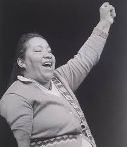
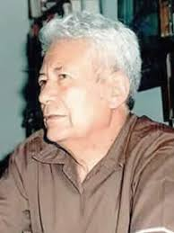

"Juan Lechin Oquendo"
Maximo lider sindical de Bolivia, fundador de la Central Obrera Boliviana (COB).

"Domitila Barrios de Chungara"
La voz femenina más potente de la minería y la democracia, que fue líder del Comité de Amas de Casa de la mina Siglo XX..

"Guillermo Lora"
Teórico e historiador del movimiento obrero boliviano, que redactó la famosa Tesis de Pulacayo en 1946, el documento ideológico más importante de los mineros.